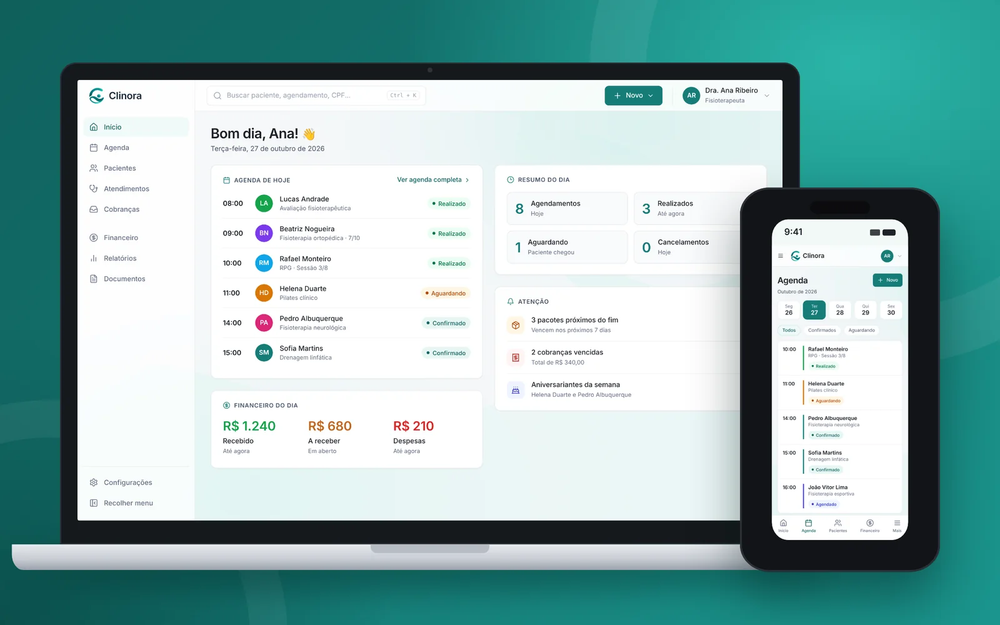
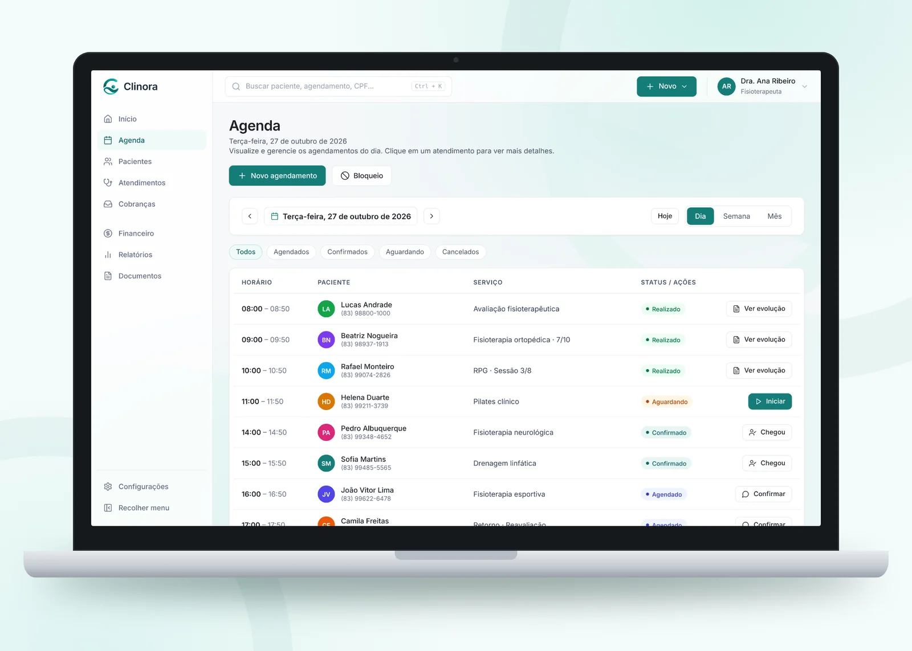
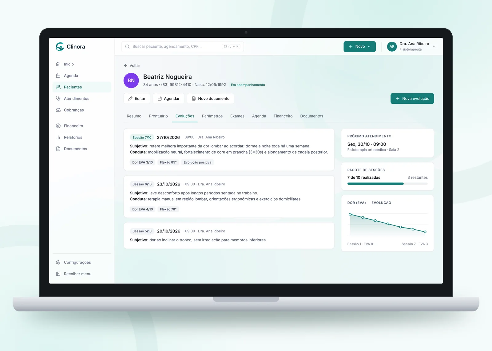
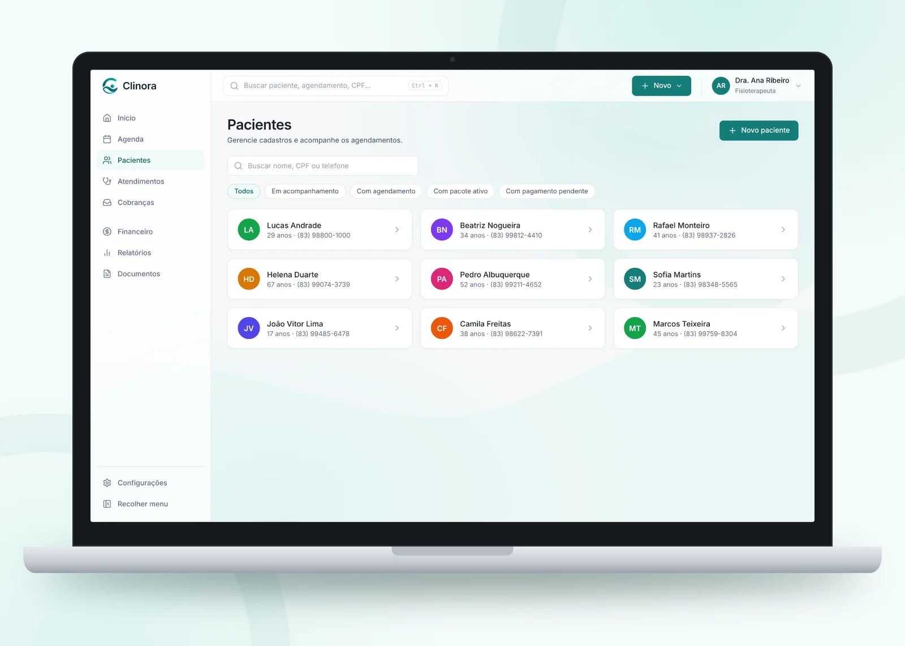
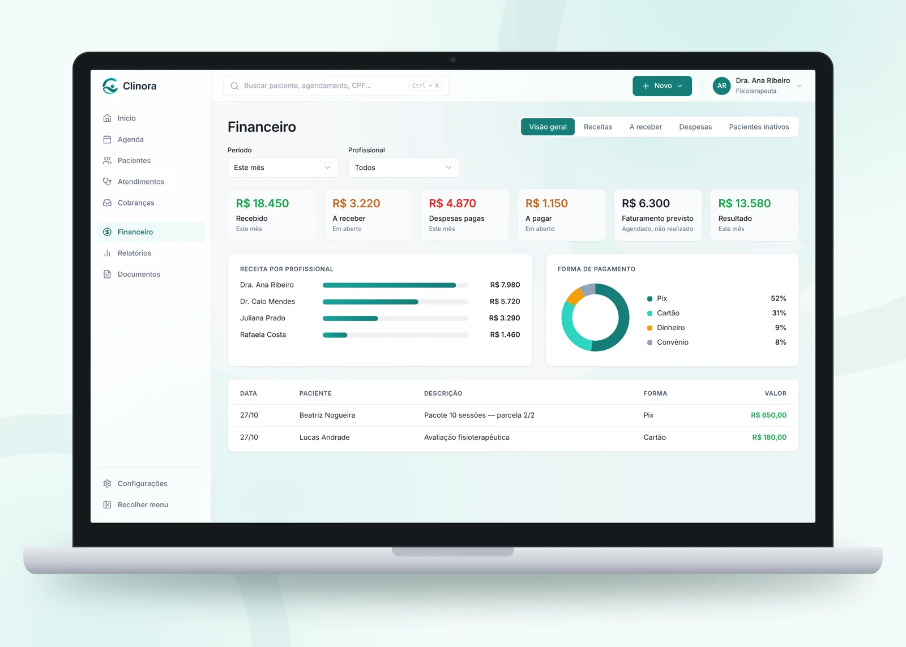
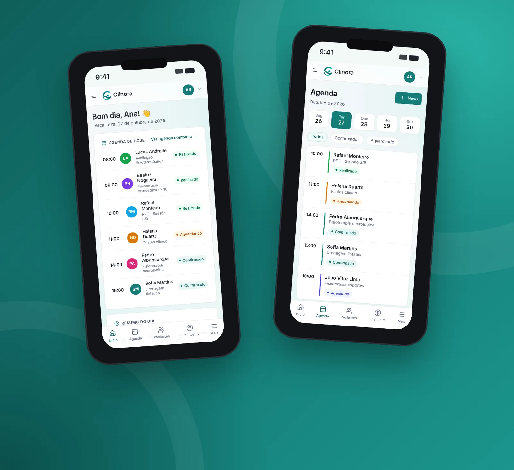

Gestão para clínicas e consultórios
Software que cuida. Clínicas que prosperam.
Agenda, pacientes, evoluções e financeiro num só lugar. Feita para profissionais independentes e pequenas clínicas, direto no navegador, no computador ou no celular.

Apresentação
Conheça a Clinora em 30 segundos
Recursos
Tudo o que o consultório precisa, sem complicar.
Início
Seu dia inteiro em uma única tela
Agenda, resumo de atendimentos e financeiro do dia assim que você entra. E os avisos que importam aparecem sozinhos.
- Pacotes de sessões perto do fim
- Cobranças vencidas
- Aniversariantes da semana


Agenda
Do agendamento ao atendimento em um clique
Veja o dia, a semana ou o mês. Cada horário mostra o status do paciente e a próxima ação: confirmar, marcar que chegou ou iniciar o atendimento.
- Status: agendado, confirmado, aguardando, realizado
- Bloqueio de horários
- Controle de sessões do pacote, como 7/10
Prontuário e evoluções
A história do paciente organizada, sessão por sessão
Registre subjetivo e conduta em cada evolução e acompanhe parâmetros como dor (EVA) e amplitude em gráfico. Prontuário, exames, agenda, financeiro e documentos ficam no mesmo perfil.
- Gráfico de evolução dos parâmetros
- Pacote de sessões e próximo atendimento à vista
- Documentos gerados a partir do atendimento


Pacientes
Encontre qualquer paciente em segundos
Busque por nome, CPF ou telefone e filtre quem está em acompanhamento, quem tem agendamento, pacote ativo ou pagamento pendente.
Financeiro
Saiba quanto entrou, quanto falta e quanto sobra
Recebido, a receber, despesas, a pagar, faturamento previsto e resultado do mês. Com receita por profissional e por forma de pagamento.
- Pix, cartão, dinheiro e convênio
- Pacotes parcelados
- Lista de pacientes inativos para reativar

Sem instalar nada
Abre no navegador, do computador ou do celular.
A Clinora é um sistema web: não tem aplicativo para baixar. É só entrar pelo navegador, e as telas se ajustam ao celular para conferir a agenda e ver quem chegou entre um atendimento e outro.

Para quem é
Profissionais independentes e pequenas clínicas de várias especialidades
Quer ver a Clinora funcionando no seu consultório?
Fale com a gente e marque uma demonstração.